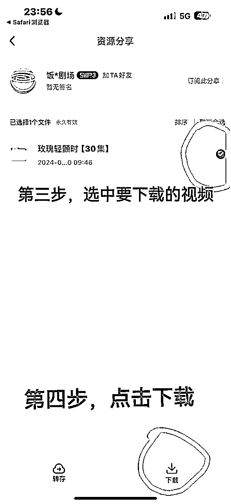

来源：https://acn4nlu22jdy.feishu.cn/docx/NKV4dWBM1oNhTXxduMGcreX0nmh
大家好，我是林北北，目前在做短剧cps，短剧追风联盟创始人。
大学开始创业，做过很多项目，从电商到中视频到推文到现在做短剧。一开始也是想做个副业赚点钱，感觉现在大环境越来越难，找到一个普通人也能赚钱的生意也越来越难。
之前做小说推文团队，最多的时候阿米巴了60人，也经历过项目一瞬间产值变低，团队缩减到五个人的情况。
身边很多做项目的朋友都在生财有术受到的启发，包括我做成短剧项目也是受到很多圈友的帮助以及指导。所以想把短剧这个赛道的sop教程分享给大家，文章比较长，全文4601字，感谢大家阅读。
我们经常在短视频平台刷到一些精彩短剧，这些短剧一般是由网络小说改版拍成短剧，一集1-3分钟，剧情紧凑吸人，像这种的剧集就是短剧。简单一点说，就是高潮迭起，剧情不拖沓。
各个短剧推广平台APP中会提供的短剧的素材，通过网盘保存下载，对下载的素材进行混剪处理（二次原创）然后就可以发布到短视频自媒体平台。
每当有用户充值短剧，就会有分佣。
将自己制作好的短剧视频发在各个平台上即可。
目前支持直接挂小程序链接的有：抖音、快手。
暂不支持挂小程序链接的为：视频号、小红书等等其他平台，像这些平台我们就需要去制作艺术码来进行转化。
可以在 抖音 快手 小红书 视频号平台进行发布，抖音需要500有效粉丝，其他三个平台0粉丝即可。
抖音和快手是用户看到短剧视频点击视频左下角链接即可充值。
视频号和小红书目前是需要我们制作艺术码，然后用户扫码进行充值观看。
现在许多短剧公司都推出了app供大家推广。大家可以直接百度搜索渠道。
我列举一些比较主流的短剧推广平台供大家选择。
（1）好省：IOS安卓均可用应用市场下载。
（2）达人视界：IOS安卓通用下载地址
https://dw.lynt2022.com/XpHnbY
https://www.pgyer.com/1iDamX
（3）兔兔短剧（曾叫选剧）：IOS安卓都只能通过渠道码下载
目前自营团队18人，人效在1.5w左右，随意po一下半个月的充值截图。
学员上岸率极高，当月赚超过600块钱的学员比例为55%。
一个视频的播放量和收入比例不等，跟选的剧关系极大，均值可参考上图员工充值记录。
我们可以采取三种方式进行制作：
（1）搬运：即对爆款视频进行简单搬运。先下载视频，然后通过一定的去重手法进行去重处理，处理完成后发布。
注意：搬运极大概率会违规，建议大家谨慎进行搬运。
（2）混剪二创（目前主要的制作方式）：将在短剧平台APP下载的短剧素材进行混剪，然后再进行剪辑处理，制作完成后发布。
（3）解说原创：将我们在短剧平台APP下载的短剧素材进行混剪处理，并写好解说文案，配音后匹配到视频中，制作完成后进行发布。
这里需要注意几点：
解说视频解说部分的时间占视频时间总长的30%以上，才能算是解说视频。
新手入门建议从混剪二创开始。做一个混剪视频的制作时长在30min-40min，而解说视频的制作时长在1.5h-2.5h之间，但是充值额并没有提高很多，时间性价比不高，解说只是锦上添花。因此新手入门推荐大家主做混剪，当熟悉剪辑之后，可以尝试解说。
并且只有做好了混剪，能够快速准确地将一个视频的主脉络摸清楚，再做解说会更好。
以下流程以兔兔短剧（曾叫选剧）作为例子给大家讲解。各平台的操作流程大同小异，大家可以直接对照着平台教程去操作。
我们的视频制作好之后，在抖音账号发布整体的流程如下：
1、按教程制作视频
2、视频制作完成后，在选剧APP中选择开始推广，然后按照要求进行操作。
3、视频发出去半小时后，点dou+查看视频发布成功与否，会有四种情况
———视频不可加热，那么将视频设置仅自己可见即可（10%可能会出现）
———如果提示侵权，那么将我们的视频隐藏掉然后换剧
———可以加热，但没流量，那么继续发就行
———可以加热，流量起来了，那么就做好引导
1、需要有500有效粉丝，需要实名
2、账号是老号新号都可以
老号粉丝画像要求：男女或女男比例9：1。要极端一点，千万不要是5:5或6：4。
新号需要养号3-5天（顺便涨粉，养号方法在下面）。
抖音如果出现了百万播的大爆量，很容易出现违规禁言等情况，不用在意，违规解除后可以继续使用。
一个百万播的视频基本都可以变现5位数，可以参考下面的收益看一下。
以下po一些员工的出单数据和播放数据：
一般来讲，如果运营多个抖音账号的话，不会一起出现违规的情况的，如果某一个账号出现了违规的情况我们就把重心放在其他的账号上，因此是可以无限的循环下去的。
不要在同一地点注册过多的账号，会被抖音判定工作室，影响我们账号流量。
我们最好是一机一卡一号，不然也会影响我们的流量的
1.前3-前5天模仿真人刷视频、刷直播。
2.第6天，修改四件套(头像、昵称、签名、学校地区)，四件套没有任何标准，签名栏可以不写，空着可以的，也可以搜一下文艺签名。
头像推荐：清新，纯欲风（不要色情擦边）开通挂载权限之前一定不要违规！！
不要在账号中过于突出短剧，我们让抖音认为我们就是一个普通的抖音用户就可以了。
3.第7天开始准备发的短剧剪辑视频。
我们养号的目的主要是模仿真人操作，让抖音判定我们账号是真人在进行操作
养号期间可以抽时间做神评论，养下号的权重。
如何做神评论：打开抖音，点击搜索。一天不要发太多，20条最多。
另外：刚注册的新号（包括长时间未使用过的老号）不要直接改四件套，需要先活跃一下账号。老号需要隐藏原来的作品，每天隐藏作品不得超过10条，不要删除作品，隐藏即可。
养号完成后就要将账号500有效粉丝，实名后开通挂载权限。
抖音的新规要求，从2024年4月16日起，个人号开通视频/图文的商品推广要求从粉丝量≥1000调整为有效粉丝量≥500，这进一步强调了有效粉丝在抖音平台上的重要性。
抖音什么属于有效粉丝？
在抖音平台上，有效粉丝指的是那些真实存在、活跃、对内容感兴趣并且分布广泛的用户。
简单来说就是通过发视频、开直播吸引来的粉丝
有效粉丝的特征包括：
1.真实性：必须是真实的人，而非机器人或虚假账户。抖音通过实名认证、关注时间等手段来验证粉丝的真实性。
2.活跃度：应该是活跃的，经常浏览和点赞抖音内容。粉丝的长时间不互动可能表明他们对内容不感兴趣或已不再使用抖音。
3.兴趣相关性：应该对发布的内容感兴趣，愿意主动关注并与账号互动。兴趣不相关的粉丝不太可能成为忠实粉丝
4.地域分布：应分布广泛，来自不同地区和背景，以增加账号的影响力
5.此外，抖音官方强调，通过优质内容吸引的粉丝才算有效。这意味着，内容的质量是吸引有效粉丝的关键。
1.先不做挂载类的短剧，先做拉新类的，这样既可以在前期有所收益，也不用花钱去刷粉丝。
2.刷粉，现在市面上有刷粉的渠道。
注意：刷粉之前先看一下自己的账号其他方面是否符合条件
参考下图：
账号达到500有效粉并实名之后，我们就可以给账号授权，挂载充值链接权限了，
1）在兔兔短剧（曾选剧）APP里，点击推广计划，随便点击一部短剧，点击申请推广
会自动跳转到抖音，点击「确认合作」即可，
后面要发视频，就按这个步骤走，
然后点击「上传视频完成任务」就可以发带有充值链接的视频了，
想推什么剧，就在选剧APP里面搜什么，然后申请推广
账号粉丝，10w/5W/1W以下，
发布时间，一星期内，
点赞数，几百~1万赞，
视频时长，12~30分钟的（越长越好，最好半小时）
不做！！！！！！！！！！！！！！！！！！！！！！！！！！
混剪二创相比较纯搬运来说难度要大一些。
首先我们在我们的兔兔短剧（曾选剧）APP中找到近期更新的新的短剧：
下载素材，可参考下图

我们先将素材导入剪映，导入剪映后选择排序：
先点击按名称排序，然后点击顺序A-Z。
排序完成后将素材导入轨道，可参考下图
开头的选择：
我们要考虑好我们的剧要吸引的人群是哪些，根据吸引的人群去选择开头
1.有冲击力
2.内容支撑 足够吸人眼球有悬念的 -变搭逻辑
3.正向找开头，坚持去废话原则，快速表达想表达的内容
4.反向找开头
好奇 悬念 钩子升上去
5.什么样的开头不能用？
巴掌 床戏相对同质化的
抖音上的爆款视频可以参考，如果爆过的视频过多不建议使用。
开头的处理：
1.处理开头有内容的部分变速 1.1-1.2，画面类的 1.4-1.5
2.剧情衔接倒序衔接-以时空间方式
找到开头后由开头往后面去进行剪辑，剪辑过程中可以将拖沓片段进行删减。视频总时长要在25~30分钟（越长越好，最好半小时）
删减内容
1.去转场（每一集开头与结尾的转场）
2.删减剧情，能前后衔接上
①回忆类的剧情-直接删 现实剧情-回忆剧情-现实剧情
②剧情没有太大作用的-非主线 剧情和剧情中间开始铺垫-直接删
③配角的戏份 配角单独画面（没有出现重要-主角）已配角为中心的画面-直接删
④啰嗦、拖沓片段 去废话原则-当删掉一句或者一段话不影响我整个表达-直接删
⑤重复剧情 -不影响当前语境、整体故事-直接删
删减硬指标：
1.内容3集 2个及以上15s及以上片段 2个8-15s以下的片段=1个 15s以上片段
2.跳集4-5集 跳一集 拆分5集 理理故事 不能影响故事逻辑
删减后粘合标准：
结尾钩子的选择
使观众引起好奇 、悬念的结尾，当做我们视频的结尾钩子。
结尾标准好奇 悬念 钩子 升上去
在这里我不太建议大家直接去做解说原创，因为解说原创的难度太大，如果大家做的话很可能1个月内都不见效，除非大家有文案功底或者说真的有需求可以去做。
发布页面有显示这个「蓝色的小图标」，就是挂载小程序链接成功了，这样发出去的视频才有收益，
没有的话重新检查一下哪个步骤做错了。
发布话题：因为一个片段看了整部剧、短剧、短剧推荐等然后再加上短剧名字
发布后，自己看自己的视频，视频左下角是没有显示充值链接的，
要点击自己的评论区才能看到。
由于视频比较大，所以发布后不会立刻出现在主页，上传需要等一段时间，
上传的时间可以刷会抖音，不要退出去，最好一直保持在发布页面，防止发布失败。
发布后，过一小时点击视频右下角的分享按钮，点击上热门（dou+），
如果显示2.3图，或者是显示正常可以投dou+的界面，就是发布成功，
播放量跑到一万以上的视频才有引导的必要，评论可以用表情包、文字，引导用户观看全集，类似下图。
可以多去同行评论区看看他们怎么引导的，借鉴学习。
做好评论区维护。评论区维护主要为引导观看。
不删除评论，恶评可以巧妙回复。（如评论“烂剧”可回复“后续更精彩”）
自己评论完以后，长按，置顶评论，
最后要和视频号一样，拿另一个没有关注这个号的小号，来评论区看看，检查有没有评论上，
抖音一天发1-3个视频，一天内视频发多了很容易封号，
发布时间：
首选以下黄金时间段！作品之间最好间隔3小时以上，不要连发。
中午10一12点
下午15一17点
晚上19一24点发可以
晚上一定要发剧，夜间流量大，看剧的人多，晚上人们也比较感性，容易冲动消费，所以我们最好都选在晚上发布，至少有一条是晚上发布的。
因为短剧的充值会有三天的退款期，因此在我们选剧APP中订单更新会有延迟，大家可以提前在抖音中实时查看，
抖音搜索，小程序推广计划，进入后点击「我的」，点击「任务中」，即可查看实时订单数据，
3天内没有退款就会同步到短剧平台APP中，隔天即可提现
抖音端口的0.9%结算周期为一个月，且需要实名才可以提现，一个人只能实名一个号，
一般这0.9%建议直接丢掉，直接开新号还赚更快